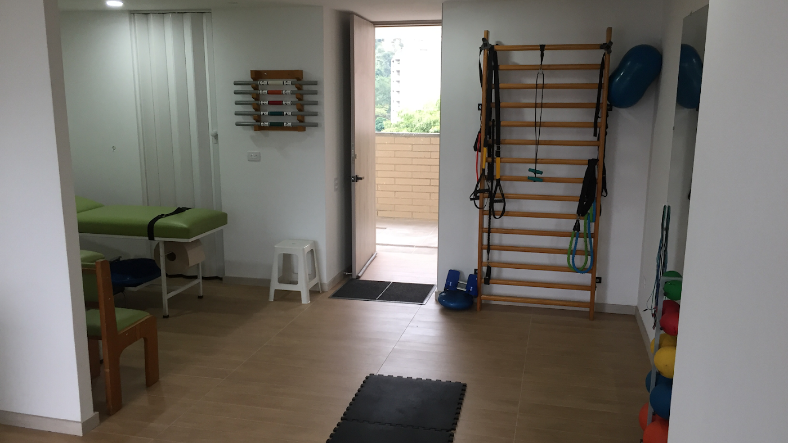
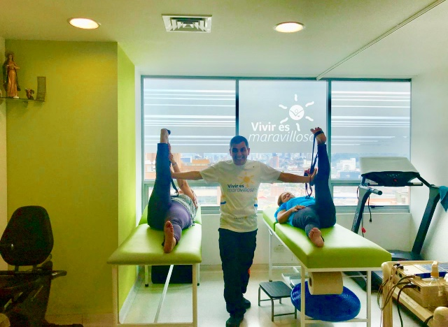

Soy Andrés Piñeros, fisioterapeuta. Te acompaño a recuperar tu movilidad con ejercicio terapéutico y terapia manual, en un consultorio equipado y sin afanes.

Cada sesión tiene un objetivo. Desde la valoración inicial sabrás qué vamos a trabajar y cómo mediremos tu avance.
Valoración y tratamiento de lesiones musculares, articulares y posturales.
Espalderas, TRX y trabajo funcional para recuperar fuerza y movilidad.
Rehabilitación y retorno progresivo a tu deporte favorito.
Técnicas manuales para aliviar dolor y tensión muscular.
Atiendo en Class48 Workliving, un edificio moderno con fácil acceso, parqueadero y todas las comodidades, en el sur del Valle de Aburrá.

"Una buena rehabilitación no se improvisa: se planifica, se mide y se acompaña."Andrés Piñeros G. · Fisioterapeuta
No es indispensable. Puedes agendar directamente tu valoración inicial; si tienes una orden médica, tráela para complementar el diagnóstico.
Entre 45 y 60 minutos, dependiendo del tratamiento y los ejercicios que trabajemos ese día.
Ambos casos. Atiendo desde lesiones deportivas y retorno progresivo al ejercicio, hasta dolores posturales del día a día.
Estoy en el edificio Class48 Workliving, con fácil acceso y parqueadero disponible para pacientes.
Cra. 47 #52 Sur-60, piso 11, Cons. 1102
Class48 Workliving
+57 316 252 5284
Con cita previa
5.0 estrellas
Encuentra el consultorio en Google Maps y agenda por WhatsApp.
📍 Ver en Google Maps 💬 Escribir por WhatsApp